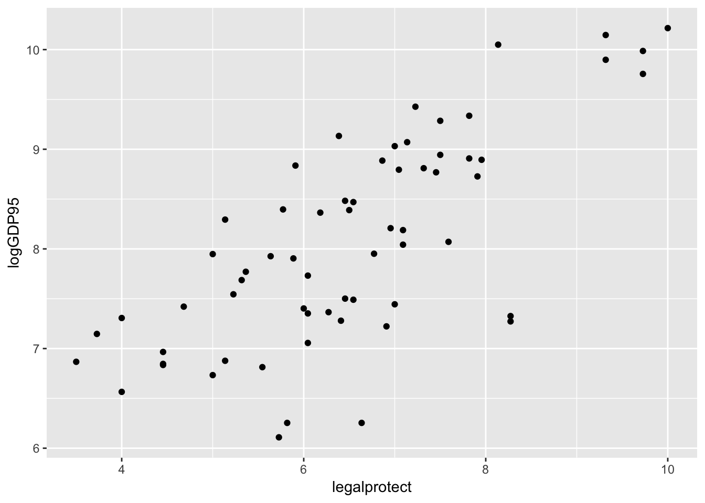
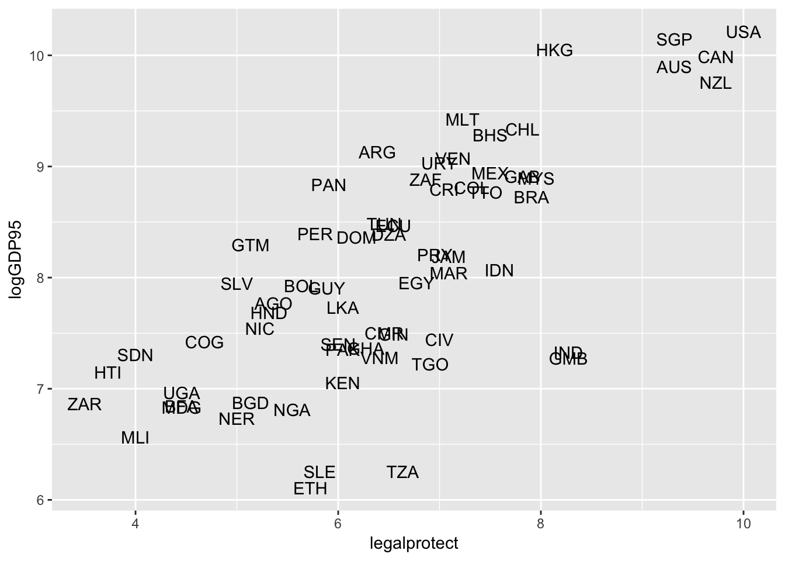
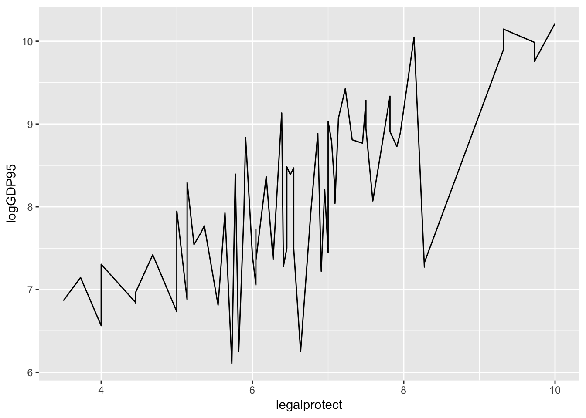
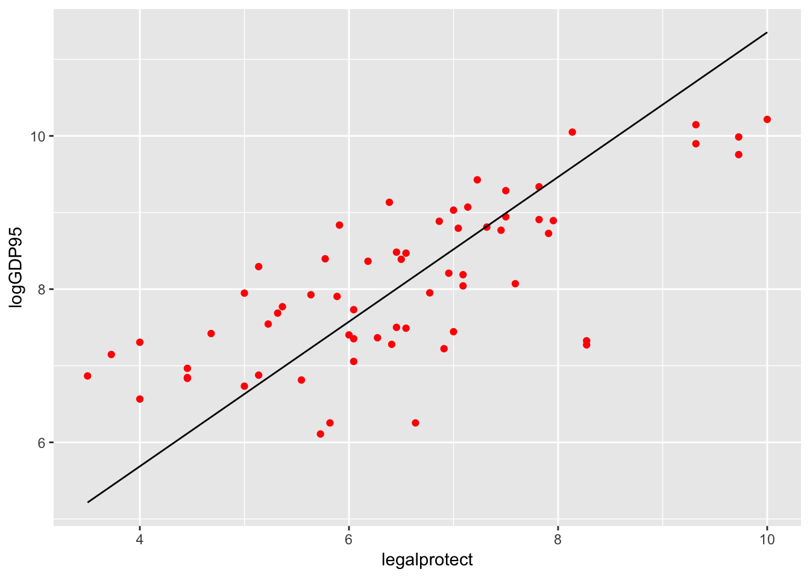
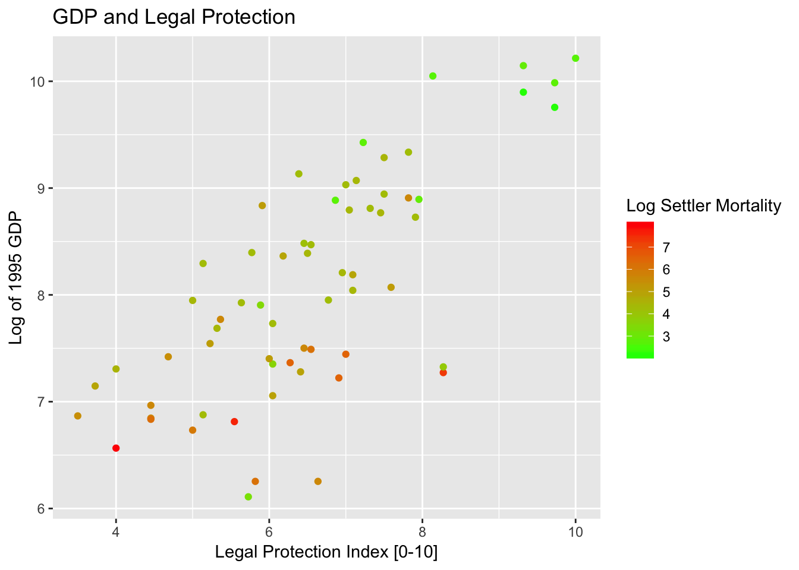
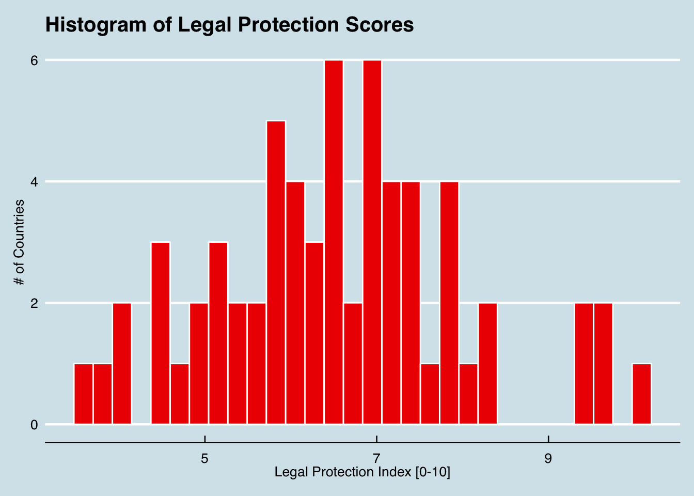

Slides Exercise Exercise Part B nlsy97.rds
The basic method of performing a linear regression in R is to the use the lm() function.
lm() function. But much more results are available if you save the results to a regression output object, which can then be accessed using the summary() function.Syntax:
myregobject <- lm(y ~ x1 + x2 + x3 + x4,
data = mydataset)lm(expenditures ~ educ_ref, data=cex_data)##
## Call:
## lm(formula = expenditures ~ educ_ref, data = cex_data)
##
## Coefficients:
## (Intercept) educ_ref
## -641.1 109.3cex_linreg <- lm(expenditures ~ educ_ref,
data=cex_data)
summary(cex_linreg)##
## Call:
## lm(formula = expenditures ~ educ_ref, data = cex_data)
##
## Residuals:
## Min 1Q Median 3Q Max
## -541109 -899 -690 -506 965001
##
## Coefficients:
## Estimate Std. Error t value Pr(>|t|)
## (Intercept) -641.062 97.866 -6.55 5.75e-11 ***
## educ_ref 109.350 7.137 15.32 < 2e-16 ***
## ---
## Signif. codes: 0 '***' 0.001 '**' 0.01 '*' 0.05 '.' 0.1 ' ' 1
##
## Residual standard error: 7024 on 305970 degrees of freedom
## (75769 observations deleted due to missingness)
## Multiple R-squared: 0.0007666, Adjusted R-squared: 0.0007634
## F-statistic: 234.7 on 1 and 305970 DF, p-value: < 2.2e-16With the tidy() function from the broom package, you can easily create standard regression output tables.
library(broom)
tidy(cex_linreg)| term | estimate | std.error | statistic | p.value |
|---|---|---|---|---|
| (Intercept) | -641.0622 | 97.866411 | -6.550381 | 0 |
| educ_ref | 109.3498 | 7.137046 | 15.321432 | 0 |
Another really good option for creating compelling regression and summary output tables is the stargazer package.
# From console: install.packages("stargazer")
library(stargazer)
stargazer(cex_linreg, header=FALSE, type='html')| Dependent variable: | |
| expenditures | |
| educ_ref | 109.350*** |
| (7.137) | |
| Constant | -641.062*** |
| (97.866) | |
| Observations | 305,972 |
| R2 | 0.001 |
| Adjusted R2 | 0.001 |
| Residual Std. Error | 7,024.151 (df = 305970) |
| F Statistic | 234.746*** (df = 1; 305970) |
| Note: | p<0.1; p<0.05; p<0.01 |
Including interaction terms and indicator variables in R is very easy.
Including any variables coded as factors (ie categorical variables) will automatically include indicators for each value of the factor.
To specify interaction terms, just specify varX1*varX2.
To specify higher order terms, write it mathematically inside of I().
Example:
wages_reg <- lm(wage ~ schooling + sex +
schooling*sex + I(exper^2), data=wages)
tidy(wages_reg)| term | estimate | std.error | statistic | p.value |
|---|---|---|---|---|
| (Intercept) | -2.0530687 | 0.6110201 | -3.3600672 | 0.0007881 |
| schooling | 0.5672762 | 0.0500783 | 11.3277746 | 0.0000000 |
| sexmale | -0.3256979 | 0.7790055 | -0.4180945 | 0.6759053 |
| I(exper^2) | 0.0075173 | 0.0014436 | 5.2072237 | 0.0000002 |
| schooling:sexmale | 0.1431400 | 0.0659669 | 2.1698748 | 0.0300877 |
By default, when including factors in R regression, the first level of the factor is treated as the omitted reference group.
Example:
wages$sex <- wages$sex %>% relevel(ref="male")
wagereg2 <- lm(wage ~ sex, data=wages); tidy(wagereg2)| term | estimate | std.error | statistic | p.value |
|---|---|---|---|---|
| (Intercept) | 6.313021 | 0.0774650 | 81.49511 | 0 |
| sexfemale | -1.166097 | 0.1122422 | -10.38912 | 0 |
A couple of useful data elements that are created with a regression output object are fitted values and residuals. You can easily access them as follows:
myresiduals <- residuals(myreg)myfittedvalues <- fitted(myreg)
The main package for specification testing of linear regressions in R is the lmtest package.
With it, you can:
All of the tests covered here are from the lmtest package. As usual, you need to install and initialize the package:
## In the console: install.packages("lmtest")
library(lmtest)Testing for heteroskedasticity in R can be done with the bptest() function from the lmtest to the model object.
bptest(wages_reg)##
## studentized Breusch-Pagan test
##
## data: wages_reg
## BP = 22.974, df = 4, p-value = 0.0001282bptest(myreg, studentize = FALSE)You can also perform the White Test of Heteroskedasticity using bptest() by manually specifying the regressors of the auxiliary regression inside of bptest:
bptest(myreg, ~ x1 + x2 + x1*x2 + I(x1^2) +
I(x2^2), data=mydata)The Ramsey RESET Test tests functional form by evaluating if higher order terms have any explanatory value.
resettest(wages_reg)##
## RESET test
##
## data: wages_reg
## RESET = 7.1486, df1 = 2, df2 = 3287, p-value = 0.0007983bgtest(wages_reg)##
## Breusch-Godfrey test for serial correlation of order up to 1
##
## data: wages_reg
## LM test = 7.0938, df = 1, p-value = 0.007735dwtest(wages_reg)##
## Durbin-Watson test
##
## data: wages_reg
## DW = 1.9073, p-value = 0.003489
## alternative hypothesis: true autocorrelation is greater than 0In practice, errors should almost always be specified in a manner that is heteroskedasticity and autocorrelation consistent.
In R, you should more explicitly specify the variance structure.
The sandwich allows for specification of heteroskedasticity-robust, cluster-robust, and heteroskedasticity and autocorrelation-robust error structures.
These can then be used with t-tests [coeftest()] and F-tests [waldtest()] from lmtest.
\(HC_1\) Errors (MacKinnon and White, 1985): \(\Sigma = \frac{n}{n-k}diag{\hat\{u_i}^2\}\)
\(HC_3\) Errors (Davidson and MacKinnon, 1993): \(\Sigma = diag \{ \big( \frac{\hat{u_i}}{1-h_i} \big)^2 \}\)
Approximation of the jackknife covariance estimator
Recommended in some studies over \(HC_1\) because it is better at keeping nominal size with only a small loss of power in the presence of heteroskedasticity.
cex_reg <- lm(expenditures ~ hh_size + educ_ref +
region, data=cex_data)
tidy(coeftest(cex_reg, vcov =
vcovHC(cex_reg, type="HC1")))| term | estimate | std.error | statistic | p.value |
|---|---|---|---|---|
| (Intercept) | -553.26201 | 94.106216 | -5.879123 | 0e+00 |
| hh_size | -298.33622 | 14.262224 | -20.917932 | 0e+00 |
| educ_ref | 109.46626 | 7.190421 | 15.223901 | 0e+00 |
| region | 83.15485 | 15.274695 | 5.443962 | 1e-07 |
In linear regressions where the regressors and regressors are in “levels”, the coefficients are of course equal to the marginal effects.
But if the regression is nonlinear or a regressor enter in e.g. in logs or quadratics, then marginal effects may be more important than coefficients.
You can use the package margins to get marginal effects.
# install.packages("margins")
library(margins)We can get the Average Marginal Effects by using summary with margins:
summary(margins(wages_reg))| factor | AME | SE | z | p | lower | upper |
|---|---|---|---|---|---|---|
| exper | 0.1209297 | 0.0232234 | 5.207226 | 2e-07 | 0.0754126 | 0.1664468 |
| schooling | 0.6422357 | 0.0334052 | 19.225648 | 0e+00 | 0.5767628 | 0.7077086 |
| sexfemale | -1.3390973 | 0.1077331 | -12.429771 | 0e+00 | -1.5502502 | -1.1279444 |
The package plm provides a wide variety of estimation methods and diagnostics for panel data.
We will cover two common panel data estimators, first-differences regression and fixed effects regression.
To estimate first-differences estimator, use the plm() in the plm package.
library(plm)Syntax:
myreg <- plm(y ~ x1 + x2 + x3, data = mydata,
index=c("groupvar", "timevar"), model="fd")Of course, in most cases fixed effects regression is a more efficient alternative to first-difference regression.
To use fixed effects regression, instead specify the argument model = “within”.
myreg <- plm(y ~ x1 + x2 + x3, data = mydata,
index=c("groupvar", "timevar"),
model="within", effect = "twoway")crime_NC <- Crime %>% as.tibble() %>%
select(county, year, crmrte, polpc, region, smsa,
taxpc) %>% rename(crimerate=crmrte,
police_pc = polpc, urban=smsa, tax_pc=taxpc)
crime_NC[1:2,]| county | year | crimerate | police_pc | region | urban | tax_pc |
|---|---|---|---|---|---|---|
| 1 | 81 | 0.0398849 | 0.0017868 | central | no | 25.69763 |
| 1 | 82 | 0.0383449 | 0.0017666 | central | no | 24.87425 |
crime_reg <- plm(crimerate ~ police_pc + tax_pc +
region + urban, data=crime_NC,
index=c("county", "year"), model="fd")
tidy(crime_reg)| term | estimate | std.error | statistic | p.value |
|---|---|---|---|---|
| (Intercept) | 0.0001289 | 0.0003738 | 0.3448421 | 0.7303481 |
| police_pc | 2.0610223 | 0.1997587 | 10.3175609 | 0.0000000 |
| tax_pc | 0.0000011 | 0.0000515 | 0.0209585 | 0.9832866 |
crime_reg <- plm(crimerate ~ police_pc +
tax_pc + urban, data=crime_NC,
index=c("county", "year"),
model="within", effect="twoway")
tidy(crime_reg)| term | estimate | std.error | statistic | p.value |
|---|---|---|---|---|
| police_pc | 1.7782245 | 0.1437963 | 12.366272 | 0.0000000 |
| tax_pc | 0.0000627 | 0.0000450 | 1.391503 | 0.1646546 |
The most popular function for doing IV regression is the ivreg() in the AER package.
library(AER)Syntax:
myivreg <- ivreg(y ~ x1 + x2 | z1 + z2 + z3,
data = mydata)Three common diagnostic tests are available with the summary output for regression objects from ivreg().
Durbin-Wu-Hausman Test of Endogeneity: Tests for endogeneity of suspected endogenous regressor under assumption that instruments are exogenous.
F-Test of Weak Instruments: Typical rule-of-thumb value of 10 to avoid weak instruments, although you can compare again Stock and Yogo (2005) critical values for more precise guidance concerning statistical size and relative bias.
Sargan-Hansen Test of Overidentifying Restrictions: In overidentified case, tests if some instruments are endogenous under the initial assumption that all instruments are exogenous.
Let’s look at an IV regression from the seminal paper “The Colonial Origins of Comparative Development” by Acemogulu, Johnson, and Robinson (AER 2001)
col_origins <- import("./data/maketable5.dta") %>%
as.tibble() %>% filter(baseco==1) %>%
select(logpgp95, avexpr, logem4, shortnam) %>%
rename(logGDP95 = logpgp95, country = shortnam,
legalprotect = avexpr, log.settler.mort = logem4)
col_origins_iv <- ivreg(logGDP95 ~ legalprotect |
log.settler.mort, data = col_origins)Estimates:
IVsummary <- summary(col_origins_iv, diagnostics = TRUE)
IVsummary["coefficients"]## $coefficients
## Estimate Std. Error t value Pr(>|t|)
## (Intercept) 1.9096665 1.0267273 1.859955 6.763720e-02
## legalprotect 0.9442794 0.1565255 6.032753 9.798645e-08Diagnostics:
IVsummary["diagnostics"]## $diagnostics
## df1 df2 statistic p-value
## Weak instruments 1 62 22.94680 1.076546e-05
## Wu-Hausman 1 61 24.21962 6.852437e-06
## Sargan 0 NA NA NASome useful functions for nonlinear regression include:
Limited Dependent Variable Models:
These models, such as logit and probit (binary choice), or Poisson (count model) are incorporated in R as specific cases of a generalized linear model (GLM).
Regression Discontinutiy:
One of the strong points of R is creating very high-quality data visualization.
R is very good at both “static” data visualization and interactive data visualization designed for web use.
Today, I will be covering static data visualization, but here are a couple of good resources for interactive visualization: [1], [2]
The main package for publication-quality static data visualization in R is ggplot2, which is part of the tidyverse collection of packages.
The workhorse function of ggplot2 is ggplot(), response for creating a very wide variety of graphs.
The “gg” stands for “grammar of graphics”. In each ggplot() call, the appearance of the graph is determined by specifying:
mygraph <- ggplot(mydata, aes(...)) + geom(...) + ... First, let’s look at a simple scatterplot, which is defined by using the geometry geom_point().
ggplot(col_origins, aes(x=legalprotect,
y = logGDP95)) + geom_point() 
Graphs can be extensively customized using additional arguments inside of elements:
ggplot(col_origins, aes(x=legalprotect,y = logGDP95)) +
geom_point(aes(size=logGDP95))Instead of using a scatter plot, we could use the names of the data points in place of the dots.
ggplot(col_origins,
aes(x=legalprotect, y = logGDP95,
label=country)) + geom_text()
A line graph uses the geometry geom_line().
ggplot(col_origins, aes(x=legalprotect, y = logGDP95)) +
geom_line() 
A more useful line is the fitted values from the regression. Here’s a plot of that line with the points from the scatterplot for the Acemoglu IV:
col_origins_fitted <- tibble(col_origins$legalprotect,
fitted(col_origins_iv))
colnames(col_origins_fitted) <- c("legalprotect", "hat")
ggplot(col_origins, aes(x=legalprotect, y = logGDP95)) +
geom_point(color="red") +
geom_line(data = col_origins_fitted, aes(x=legalprotect, y=hat)) 
A standard task in making the graph is specifying graph titles (main and axes), as well as potentially specifying the scale of the axes.
ggplot(col_origins, aes(x=legalprotect, y = logGDP95)) +
geom_point(color="red") +
geom_line(data = col_origins_fitted, aes(x=legalprotect, y=hat)) +
ggtitle("GDP and Legal Protection") +
xlab("Legal Protection Index [0-10]") +
ylab("Log of 1995 GDP") +
xlim(0, 10) + ylim(5,10)## Warning: Removed 3 rows containing missing values (geom_point).## Warning: Removed 5 rows containing missing values (geom_path).The geometry point for histogram is geom_histogram().
ggplot(col_origins, aes(x=legalprotect)) +
geom_histogram() +
ggtitle("Histogram of Legal Protection Scores") +
xlab("Legal Protection Index [0-10]") +
ylab("# of Countries") The geometry for a bar plot is geom_bar(). By default, a bar plot uses frequencies for its values, but you can use values from a column by specifying stat = “identity” inside geom_bar().
coeffs_IV <- tidy(col_origins_iv)
ggplot(coeffs_IV,
aes(x=term, y=estimate)) +
geom_bar(stat = "identity") +
ggtitle("Parameter Estimates for Colonial Origins") +
xlab("Parameter") + ylab("Estimate")You can easily add error bars by specifying the values for the error bar inside of geom_errorbar().
ggplot(coeffs_IV,
aes(x=term, y=estimate)) +
geom_bar(stat = "identity") +
ggtitle("Parameter Estimates for Colonial Origins") +
xlab("Parameter") + ylab("Estimate") +
geom_errorbar(aes(ymin=estimate - 1.96 * std.error,
ymax=estimate + 1.96 * std.error),
size=.75, width=.3, color="red3")You can easily add color to graph points as well. There are a lot of aesthetic options to do that — here I demonstrate adding a color scale to the graph.
ggplot(col_origins, aes(x=legalprotect,
y = logGDP95 , col= log.settler.mort)) + geom_point() +
ggtitle("GDP and Legal Protection") +
xlab("Legal Protection Index [0-10]") +
ylab("Log of 1995 GDP") +
scale_color_gradient(low="green",high="red",
name="Log Settler Mortality")
ggplot(col_origins, aes(x=legalprotect)) +
geom_histogram(col="black", fill="red2") +
ggtitle("Histogram of Legal Protection Scores") +
xlab("Legal Protection Index [0-10]") +
ylab("# of Countries") Another option to affect the appearance of the graph is to use themes, which affect a number of general aspects concerning how graphs are displayed.
library(ggthemes)ggplot(col_origins, aes(x=legalprotect)) +
geom_histogram(col="white", fill="red2") +
ggtitle("Histogram of Legal Protection Scores") +
xlab("Legal Protection Index [0-10]") +
ylab("# of Countries") +
theme_economist()
This has been just a small overview of things you can do with ggplot2. To learn more about it, here are some useful references:
RStudio’s ggplot2 cheat sheet: